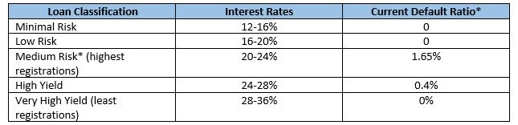

In Part 1 (click here), we discussed how a lender can minimize risk. In Part 2, we discuss, how to decide which loan to invest in?
Let’s consider the behavior of a typical stock market investor. He does not invest in just one stock. He decides on a mix of stocks – blue chip, large-cap, mid-cap, income stocks, cyclical stocks, defensive stocks etc. Some of these stocks are ‘relatively-safe’ where a minimum return can be assumed (not guaranteed) but stocks of companies which invest or build businesses that may or may not do well can be termed risk-prone. However, if such companies do perform as per expectation, they end up giving high returns. So even if one or two such companies do not perform, the investor expects the return from the other companies to more than compensate for the loss/low return. So a stock-market investor hedges not just his risk, but also his return by putting his money across various stocks thereby building a portfolio of high, low and medium risk stocks.
P2P lending is an alternative means of investment but the formula is similar - build a diversified portfolio of investments (here, loans disbursed) just like you would when investing in stocks or mutual funds.
Building the portfolio should also revolve around the same concept - what is you risk-appetite or ability to take risk?
A few questions can help answer this question.
Have you ever invested in stocks and mutual funds? Did you pull your money out during the 2008-09 financial crisis and vowed never to invest again? Did you exit all your mutual funds or did you continue unfazed comprehending that they are long term investments?
These questions can help an investor introspect and understand his risk appetite or in other words, what kind of investor they are – high or low risk taker.
This is relevant because if you are a low risk taker, any default by a borrower (which is always a possibility in risk-based investments), will be taken personally by you and create dissonance. But if you are a high risk taker with a higher appetite for risk, you may just go for loans with high risk but even higher gain.
All loans on Faircent.com are classified as

*Default ratio is percentage of total amount borrowed in that classification in relation to outstanding on loans disbursed since January 2016. Medium risk has the maximum registrations amongst all classifications and hence the default ratio is also a factor of the absolute number of registrations.
However, if a lender is looking to earn higher returns, the lender will have to invest in loans that have a higher interest rate and where the default ratio could also be higher. What the lender in this case is banking on is that the earnings, after adjusting for the delinquency ratio, will still be high enough to justify the risk. So a lender investing in loans with annualized return of say 20-22% after adjusting his portfolio against various default rate scenarios will still earn a return of 18-20%. However, this is possible only if the lender has built a diversified portfolio of loans across risk levels.
At Faircent, we advise our lenders to target 100 borrowers spread across risk categories. We ensure they do not invest in more than 20% of a single borrower’s fund requirement thereby freeing up their funds to invest across other borrowers. We ask them to loan out small amounts to large number of borrowers. That’s how portfolios are built. That’s how risk is spread. That’s how returns are increased. To know more Sign UP now as a lender, because every % counts!